În stînga este slide-ul din curs, în dreapta aceeași figură sau același tabel, calculat în browser din aceleași date. Butonul ▶ modifică parametrul pas cu pas; casetele „Exemplu rezolvat” refac calculul cu cifrele capitolului.
Rolul volatilității multivariate · Cadrul GARCH multivariat · Modelele VEC și BEKK · Corelații condiționate constante și dinamice · DCC pentru S&P 500 și DAX · Cinci piețe: S&P 500, DAX, BET, EUR/RON, Bitcoin · VaR 1% al unui portofoliu cu DCC · Rapoarte dinamice de acoperire
Rolul volatilității multivariate
Exemplu rezolvat: corelația și riscul portofoliului
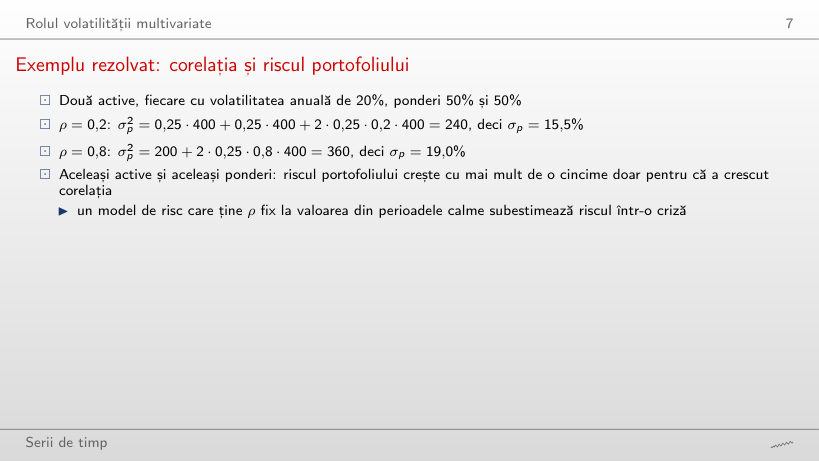
Exemplu rezolvat
Răspuns
Nu: +0,63 puncte de la ρ = 0,2 la 0,3 (de la 15,49% la 16,12%), dar doar +0,51 puncte de la 0,9 la 1 (de la 19,49% la 20%). σp2 este liniar în ρ, iar σp este rădăcina lui, deci curba este concavă. Cu ρ = −0,2 volatilitatea este 12,6%.
Volatilitatea portofoliului în funcție de corelație
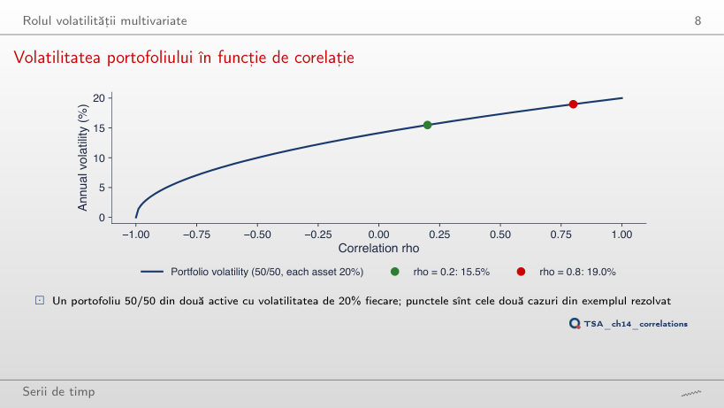
Răspuns
Crește: 19,02% la 60% și 19,64% la 90%, față de 18,97% la 50/50. Cu volatilități egale, portofoliul 50/50 are cel mai mic risc oricare ar fi ρ. Cu al doilea activ la 40% și ρ = −1, σp = |0,5 · 20 − 0,5 · 40| = 10%: riscul dispare doar cu w = 2/3.
Corelații variabile în timp
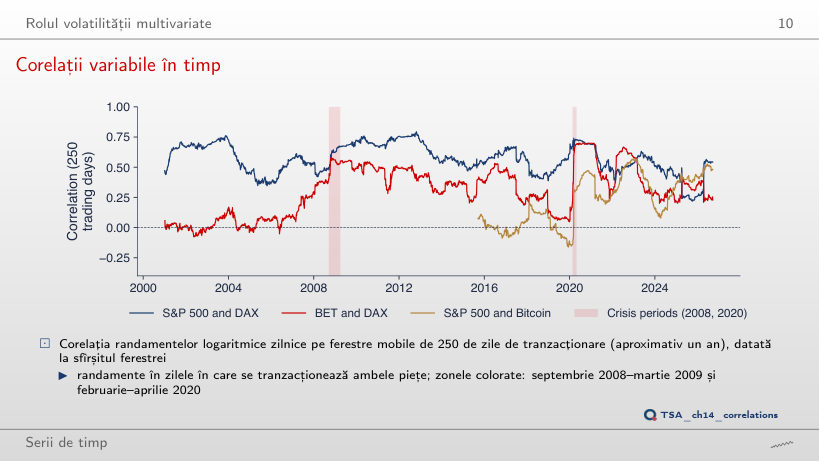
Răspuns
Crește la 0,30 (noiembrie 2025): într-o fereastră lungă zilele asincrone din aprilie 2025 cîntăresc mai puțin. Cu 60 de zile corelația coboară pînă la −0,27 (iulie 2025) și urcă pînă la 0,86 (ianuarie 2012), cu abaterea standard 0,147 față de 0,122 la 250 de zile.
Tranzacționarea asincronă și deplasarea corelațiilor zilnice
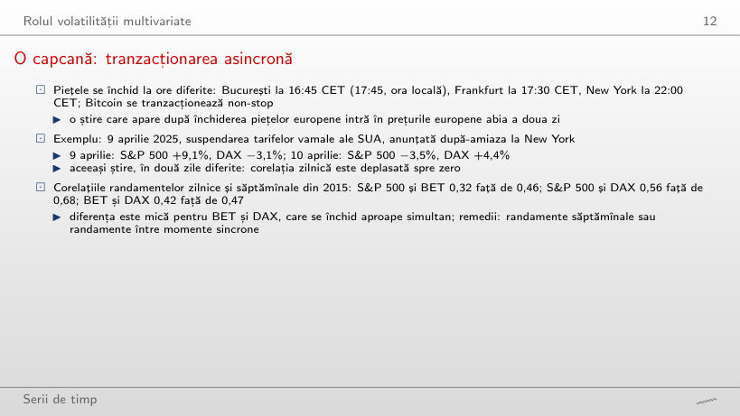
Răspuns
Crește: 0,32 zilnic, 0,40 pe 2 zile și 0,50 pe 10 zile, peste corelația săptămînală de 0,46: o știre care ajunge la București a doua zi intră în același randament pe k zile. Dintre cele zece perechi, doar S&P 500 și Bitcoin au o corelație săptămînală mai mică decît cea zilnică (0,25 → 0,19): randamentul săptămînal al lui Bitcoin include și weekendul, iar cele 610 săptămîni dau o estimare mai zgomotoasă decît cele 2 815 zile.
Cadrul GARCH multivariat
Două condiții pentru Hₜ
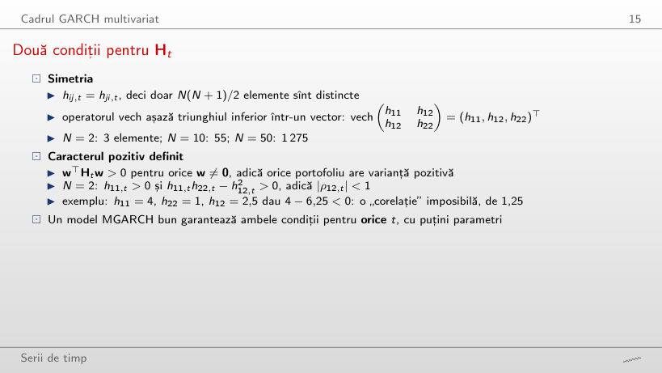
Exemplu rezolvat
Răspuns
Doar pentru |h12| < 2, adică |ρ| < 1. La h12 = ±2 determinantul și o valoare proprie sînt 0 (o combinație fără risc); pentru |h12| > 2 există portofolii cu varianță negativă, de exemplu −0,416 pentru h12 = ±2,5. Semnul covarianței nu contează, doar mărimea ei față de √(h11h22).
Modelele VEC și BEKK
Exemplu rezolvat: un pas al unui BEKK diagonal
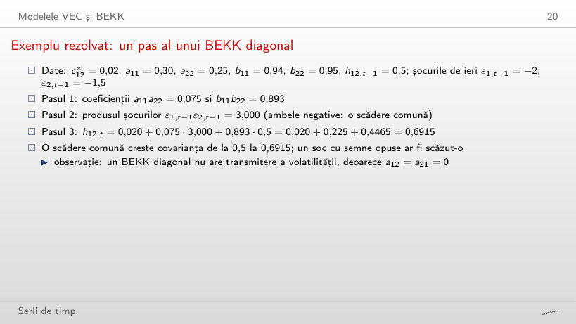
Exemplu rezolvat
Răspuns
0,2415 = 0,020 + 0,075 · (−3) + 0,4465: șocurile de semne opuse scad covarianța. Cu ε2,t−1 = 0, h12,t = 0,4665, tot sub 0,5, deși nivelul de lungă durată este 0,625: acel nivel ține cont că, în medie, produsul șocurilor este egal cu h12, iar o zi fără șoc comun aduce doar constanta și persistența.
Problema dimensionalității
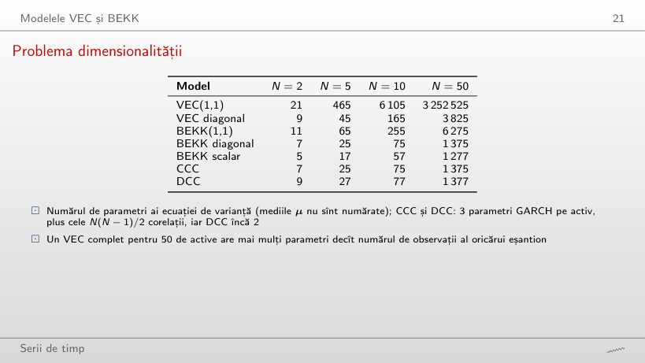
Răspuns
527: 90 de parametri GARCH estimați serie cu serie, 435 de corelații de selecție și doar 2 parametri, a și b, găsiți prin optimizare numerică. VEC(1,1) are 432 915.
Numărul de parametri în funcție de numărul de active
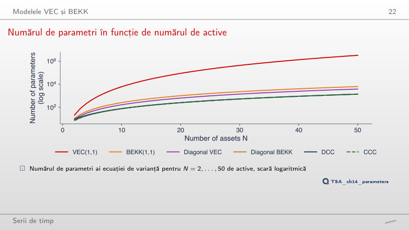
Răspuns
De 15,7 ori (de la 3 252 525 la 51 010 050), ca N4: 24 = 16. DCC crește de 3,8 ori (de la 1 377 la 5 252), BEKK(1,1) de 4 ori (de la 6 275 la 25 050).
Corelații condiționate constante și dinamice
Exemplu rezolvat: un pas al recurenței DCC
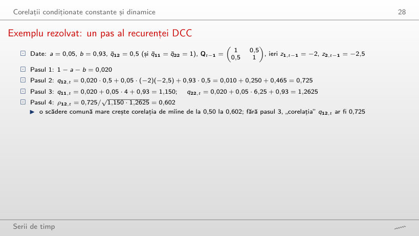
Exemplu rezolvat
Răspuns
0,187: q12,t = 0,010 − 0,250 + 0,465 = 0,225, iar q11,t = 1,150 și q22,t = 1,2625 rămîn aceleași. Cu z2,t−1 = 0 corelația este 0,454, tot sub 0,5: mișcarea unei singure piețe mărește o varianță de la numitor fără să adauge nimic la covarianță.
Interpretarea parametrilor a și b
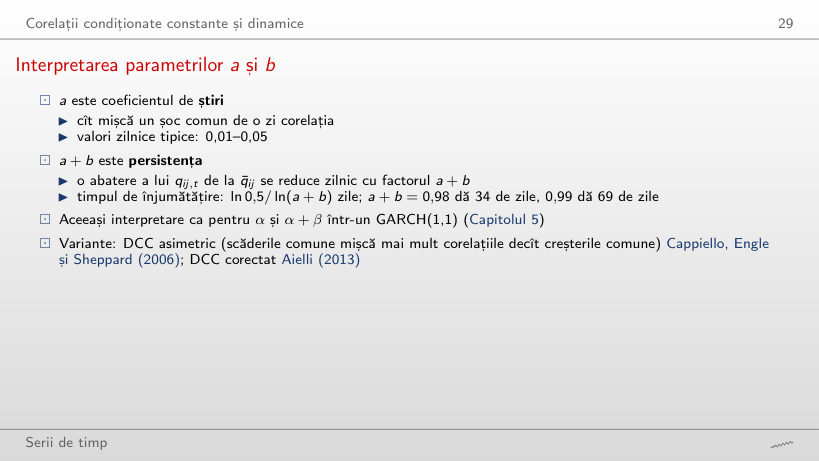
Exemplu rezolvat
Răspuns
Se dublează, de la 69 la 138 de zile: ln(a + b) ≈ −(1 − a − b), deci timpul de înjumătățire este aproximativ 0,69/(1 − a − b). Cu a + b = 0,90 el este 6,6 zile, iar după 20 de zile rămîne 12% din abatere.
DCC pentru S&P 500 și DAX
Pasul 1: două modele GARCH univariate
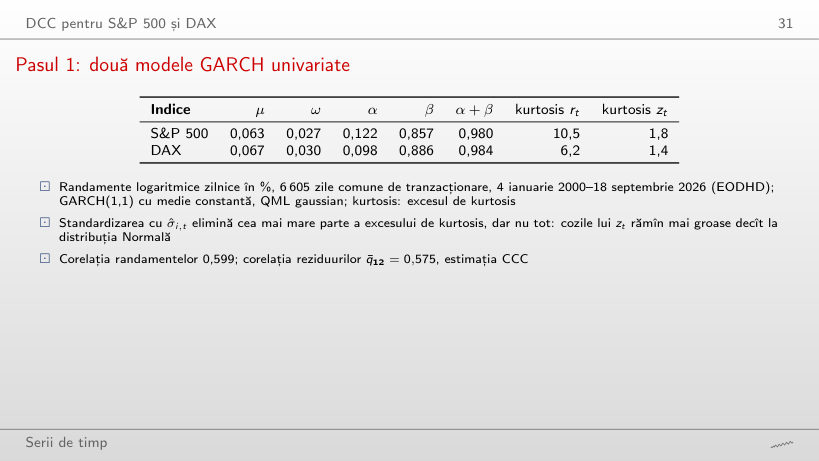
Răspuns
S&P 500: 1 − 1,8/10,5 = 83%, față de DAX: 1 − 1,4/6,2 = 78%. Volatilitatea variabilă explică cea mai mare parte a cozilor groase, dar reziduurile zt păstrează un exces de kurtosis de 1,4–1,8; de aceea VaR-ul cu cuantila distribuției Normale va avea prea multe încălcări.
Pasul 1: volatilitățile condiționate
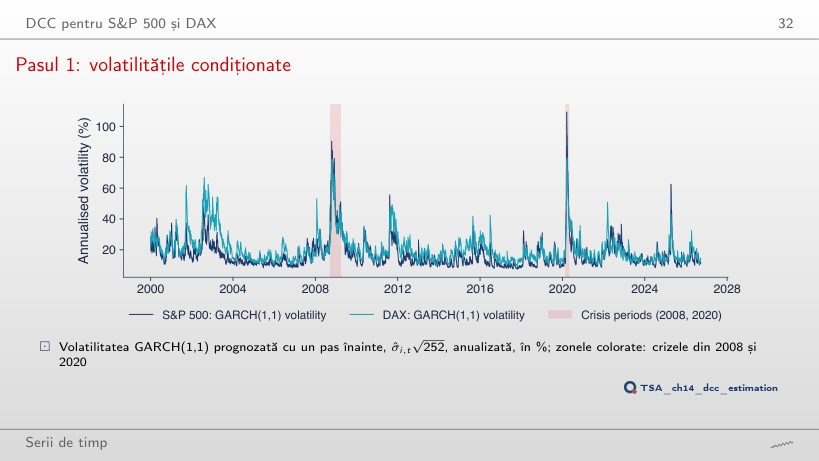
Răspuns
Crește la 139% (17 martie 2020), de la 109%: un α mai mare reacționează mai mult la șocul fiecărei zile. Cu multiplicatorul 0,25 maximul scade la 64% și se mută pe 25 martie 2020. Sînt rulări suplimentare ale filtrului, nu estimări.
Pasul 2: modelul DCC estimat
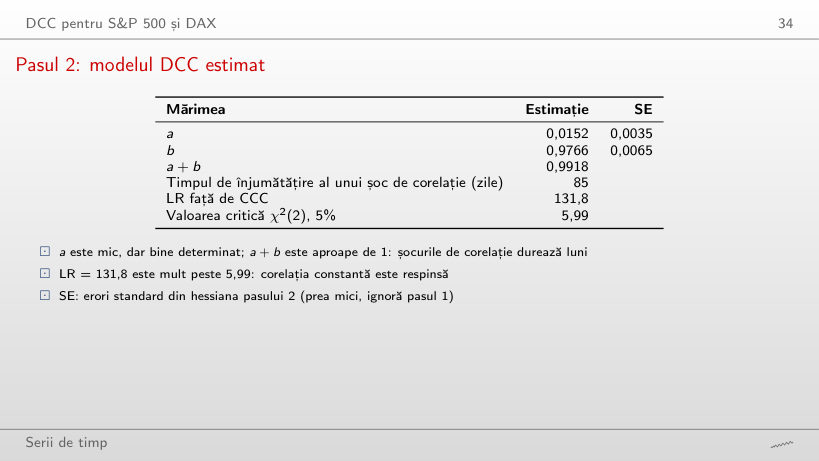
Răspuns
Da: cel mai bun a din grilă, 0,0074, dă LR = 121,0, mult peste 5,99. Cu b = 0,90 cel mai bun a este 0,0375 și LR = 102,1: verosimilitatea are o creastă pe care a și b se înlocuiesc parțial; maximul, 131,8, este la estimarea (0,0152; 0,9766).
Corelația DCC dintre S&P 500 și DAX
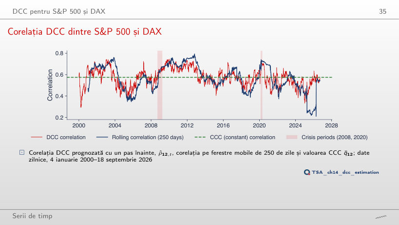
Răspuns
Crește la 0,120, aproape cît corelația pe 250 de zile (0,122), iar corelația variază între 0,19 și 0,82. LR scade la 100,1: variația în plus este zgomot pe care verosimilitatea îl penalizează. Cu a = 0 corelația este constantă, 0,575, iar LR = 0.
Corelațiile în crize
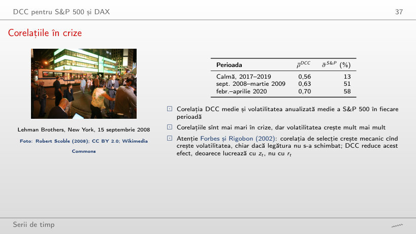
Răspuns
Crește la 0,18 (0,73 față de 0,55); cu a = 0 toate trei mediile sînt 0,575. Corelația de selecție a randamentelor (alegeți-o în casetă) dă 0,74 și 0,52: crește mecanic cu volatilitatea (Forbes și Rigobon), iar DCC lucrează cu reziduurile standardizate.
Corelația DCC în crizele din 2008 și 2020
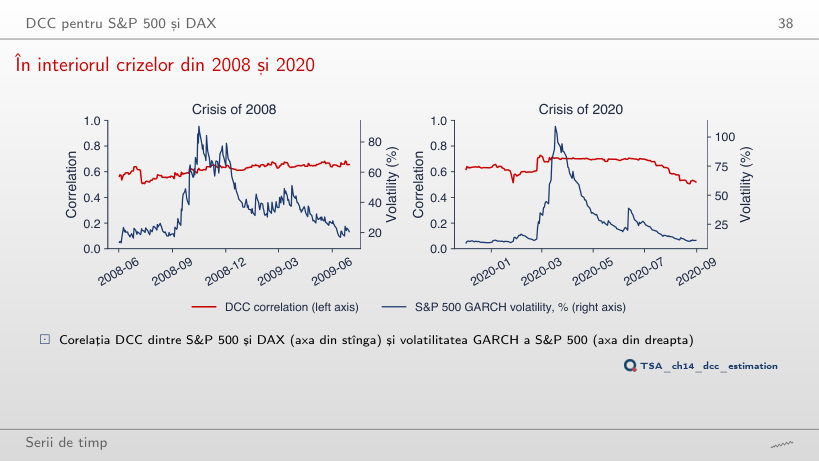
Răspuns
Nu: cu α dublat maximul corelației, 0,71, este pe 12 iunie 2020, după maximul volatilității (139% pe 17 martie 2020). Volatilitățile mai mari din martie împart șocurile acelor zile, deci reziduurile standardizate care alimentează recurența DCC sînt mai mici. Cu multiplicatorul 0,25, volatilitatea din 2008 atinge maximul abia pe 2 decembrie 2008 (60%).
Cinci piețe: S&P 500, DAX, BET, EUR/RON, Bitcoin
Un model DCC cu cinci active
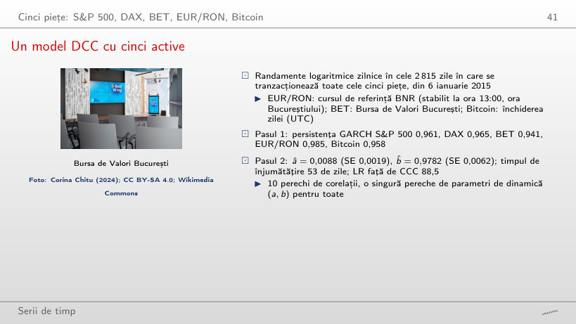
Răspuns
Bitcoin: 281% pe 13 martie 2020. S&P 500 atinge 121% pe 17 martie 2020, DAX 84% pe 13 martie 2020, BET 98% pe 20 decembrie 2018 (ziua în care raportul de acoperire DCC atinge 1,00), EUR/RON 13% pe 21 mai 2025.
Corelațiile dinamice a patru perechi
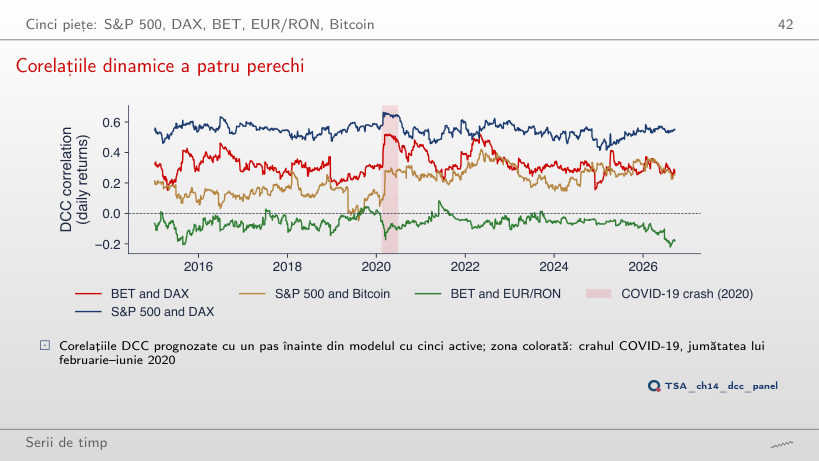
Răspuns
Se lărgește: de la −0,33 la 0,62, cu media tot 0,21. Cu a = 0 cele patru corelații devin constante, egale cu Q̄: 0,55, 0,32, 0,21 și −0,07; acesta este modelul CCC, respins de LR = 88,5.
Corelațiile medii: perioadă calmă și criză
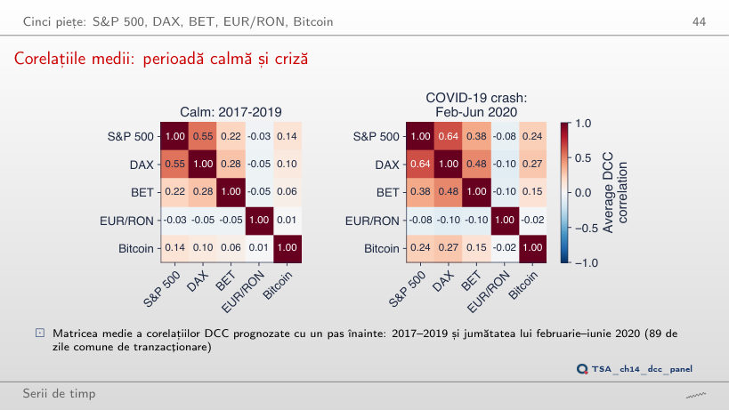
Răspuns
Crește la 0,23, iar media din perioada calmă scade la 0,10. Cu a = 0 cele două matrice sînt identice (media 0,135): cu corelații constante nu se vede nicio creștere în criză.
VaR 1% al unui portofoliu cu DCC
Exemplu rezolvat: VaR 1% pentru două active
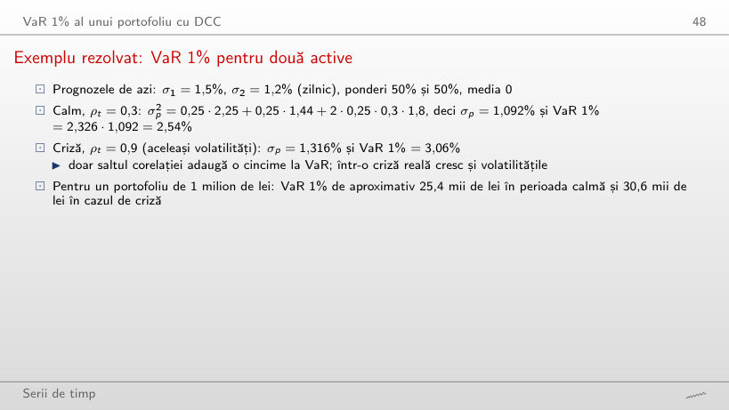
Exemplu rezolvat
Răspuns
3,14%: σp = 0,5 · 1,5 + 0,5 · 1,2 = 1,35%, cea mai mare valoare posibilă cu aceste volatilități. Cu ρt = −0,5 VaR 1% este 1,60%, aproximativ 16,0 mii de lei pentru 1 milion de lei.
VaR 1% al unui portofoliu S&P 500 și DAX, 2015–2026
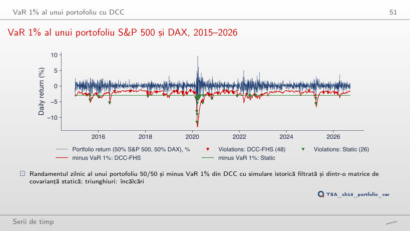
Răspuns
2,83% (82 de încălcări față de 145 așteptate): prea puține, LRuc = 33,6, p < 0,001. La 1% VaR-ul static trecea testul (0,90%, p = 0,577): este prea mare în anii calmi, ceea ce la 1% compensează încălcările din crize, iar la 5% nu. DCC cu FHS are la 5% rata 4,60% (p = 0,314).
Interpretarea backtesting-ului
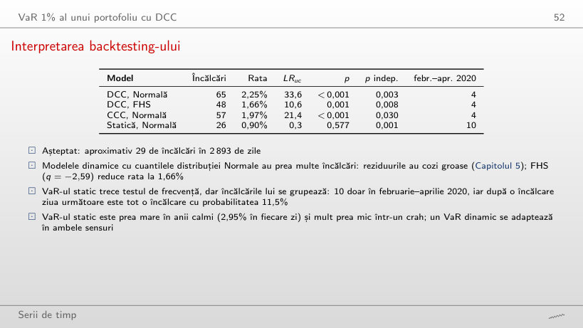
Răspuns
Nu: toate patru au p ≤ 0,0004; încălcările vin grupate în zilele agitate. La 2,5% doar DCC cu FHS trece testul Kupiec (79 de încălcări, rata 2,73%, p = 0,433).
Rapoarte dinamice de acoperire
Exemplu rezolvat: un raport de acoperire
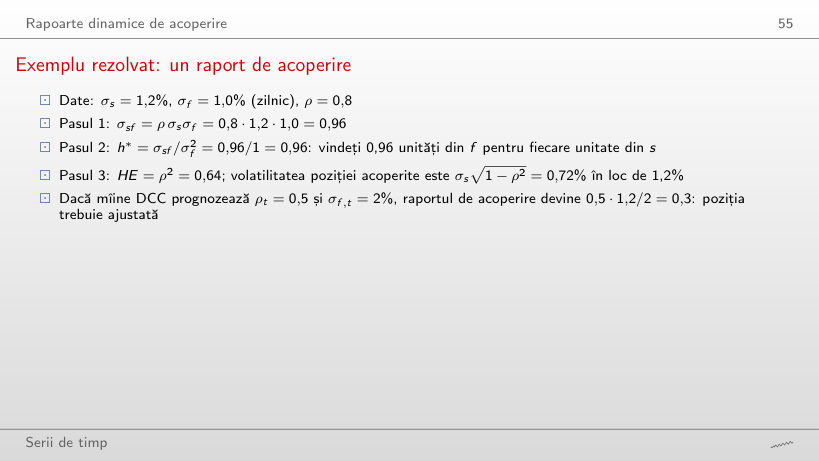
Exemplu rezolvat
Răspuns
h* = −0,96: cumpărați 0,96 unități din f pentru fiecare unitate din s; HE = ρ2 = 0,64, ca pentru ρ = 0,8. Cu ρ = 1 volatilitatea poziției acoperite este 0 (h* = 1,2).
Acoperirea BET cu DAX, 2015–2026
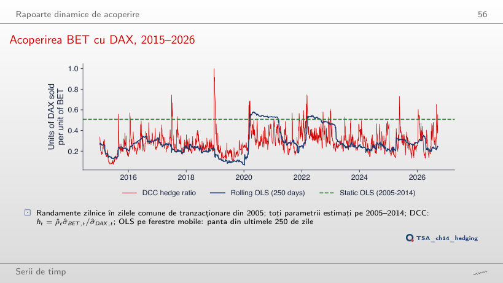
Răspuns
Nu: între 17,0% (300 de zile) și 18,0% (500 de zile). Cu a = 0 în DCC eficiența scade la 15,5%, tot peste raportul static (13,6%): corelația este atunci constantă, dar raportul q̄ σBET,t/σDAX,t urmează încă volatilitățile GARCH.
Interpretarea rapoartelor de acoperire
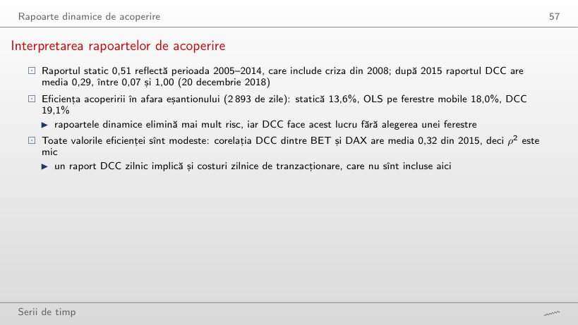
Răspuns
Nu: cel mai bun rezultat este 18,6%, cu 80 de zile, sub 19,1% pentru DCC; cu 300 de zile se obține doar 17,0%. Alegerea ferestrei schimbă rezultatul cu peste un punct procentual, iar DCC nu cere această alegere.
Randamentele logaritmice zilnice (în %) ale eșantioanelor capitolului, în zilele comune de tranzacționare (S&P 500, DAX, BET, EUR/RON, Bitcoin; data/market, EODHD), nu sînt revizuite și reproduc exact cifrele din curs. Estimările provin din codul capitolului: modelele GARCH(1,1) ale pasului 1 (pachetul arch) și parametrii (a, b) ai pasului 2, cu erorile lor standard, pentru S&P 500 și DAX (2000–2026), pentru panelul cu cinci active (din 2015), pentru eșantionul de estimare 2000–2014 al VaR-ului și pentru eșantionul 2005–2014 al acoperirii. Browserul rulează din nou recurențele: filtrul de varianță GARCH cu parametrii dați, recurența DCC, corelațiile și pantele pe ferestre mobile, verosimilitatea de corelație, VaR-ul și testele Kupiec și Christoffersen. Variantele care nu apar în curs (alte ferestre, alte valori ale lui a și b, alt α al pasului 1 cu aceeași persistență, alte niveluri ale VaR-ului, randamente pe k zile, prognozele fără șocuri noi, mediile trimestriale) sînt rulări suplimentare ale codului capitolului pe aceleași date; graficele din casetele „Exemplu rezolvat”, „Tranzacționarea asincronă și deplasarea corelațiilor zilnice”, „Două condiții pentru Hₜ”, „Problema dimensionalității”, „Interpretarea parametrilor a și b”, „Pasul 1: două modele GARCH univariate”, „Pasul 2: modelul DCC estimat”, „Corelațiile în crize”, „Un model DCC cu cinci active”, „Interpretarea backtesting-ului” și „Interpretarea rapoartelor de acoperire” sînt grafice suplimentare pentru slide-uri care dau doar cifre.